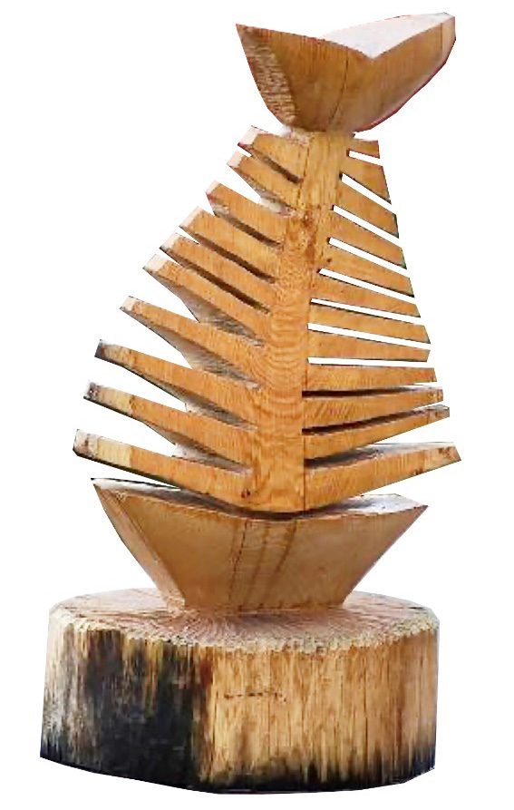

Sculpture in-the-round
This is a sculptural method in which sculptural work or piece can be viewed and touched on all of its sides.
Figure 5.14 shows example of wood sculpture in the round.


Activity 5.11
Collect various man-made objects that can be found around the school compound. Then, analyse their physical characteristics and carve in relief one of the collected objects by using various materials.
Exercise: 5.11
Sculpture can be created in both relief and in the round. Analyse the difference between the two sculpture styles.